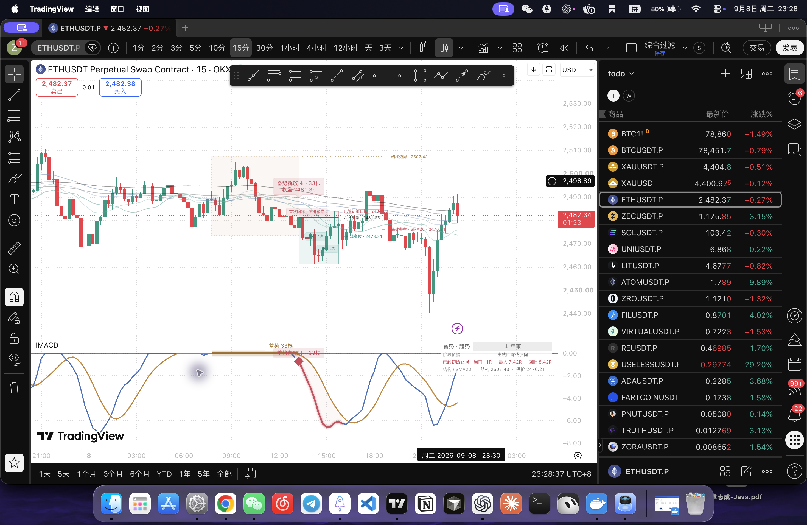

已在 Mac TradingView 编译并保存。 云端沿用“IMACD 零轴密集启动 · 多周期趋势 V1”，保存版本为 11，09/08 23:36。本地版本是 V2.5。新增持续阶段、动态 R 参考、首次回踩；原箭头、六条细均线、副图双线和零轴保持一致。
最终源代码提交 190a47a164448da1be8c9f2a1e24eaf29adcaa1e；工程探针构建器与初版代码提交 be037e8d0c76bfb84c37f85851e8d9a9562a00a0，23:22 入库后才生成并在 TradingView 运行探针。实验 exp-imacd-pine-lifecycle-20260908-v1。
| 细节 | V2.4 | V2.5 |
|---|---|---|
| 释放后的状态 | 重点显示跟随 12 根光晕 | 最新释放单独持续跟踪，光晕消失不清空阶段 |
| 价格尚未破箱 | 没有独立区分 | 显示“释放观察”；真正突破再回箱才叫“重回整理” |
| 3R 框 | 固定距离参考框 | 改名观察位；最新收益区随存续期间已达峰值延展，不把 3R 设为退出 |
| 路径参考 | 没有生命周期统计 | 初始 R 冻结，显示当前、最大、回吐 R |
| 初始止损触及 | 没有路径终止判断 | R 永久冻结；结构仍可继续跟踪，互不混淆 |
| 里程碑 | 没有 | 最新一段达到后才标记 3R、5R、10R，各一次 |
| 首次回踩 | 只高亮蓄势中的影线回踩 | 增加释放后的首次箱沿 / 指定均线回踩；同根合并 |
| 保护参考 | 没有 | 默认 SMA20，可固定选择六均线之一；多只升、空只降 |
| 面板归属 | 不容易区分历史窗口与当前状态 | 明示“最新释放＋日期”，完整确认时间放在悬停提示中 |
原系统的普通启动 / 退出、近零蓄势释放、均线密集、MTF、五条警报、六条 MA plot 与副图绘图均通过源代码精确对照。现有前端、YOLO、TG、Bark、监控服务和执行器本轮没有改动或重启。
结构阶段可显示初次释放、释放观察、趋势延续、首次回踩、重回整理、保护失守、结束。主线回零 / 反向，或收盘越过原蓄势区反侧边界，才结束该结构。新蓄势可以与前一段结构同时存在，面板分别显示。保护失守是参考提示，不是自动平仓。
初始 R 等于入场参考到信号 K 线极值的距离：多头用信号低点，空头用信号高点。默认仍为信号收盘，可选下一根开盘。后续均线移动不会改写初始 R。结构结束、新释放接替、初始止损触及，都会停止旧参考；已停止的参考不会因为后来价格继续走强而重新累计。
信号收盘模式不统计释放当根入场前的高低点；下一根开盘模式统计该开盘后的整根范围。同根同时触及初始止损与里程碑，先按止损处理，不增加该根峰值。跳空穿越止损时取更不利的开盘作为路径参考，不能据此声称实际成交。如果下一根跳空导致风险距离无效，显示“入场参考无效”，不画误导性的 R 框。
首次回踩必须满足：前根收盘在参考同侧，本根真实影线触及，实体守在外侧，且收盘仍收回同侧。箱沿和均线同根命中只高亮一次。优先处理结束、回箱和保护失守，避免把结构破坏误标为好回踩。
保护线只在最近确认 K 线附近显示短线，不把最新均线水平画回过去。历史风险框最多保留 8 组，可调至 20；阶段、保护线和里程碑仅跟踪最新一段，避免标签积累。
| 检查 | 结果 | 范围 |
|---|---|---|
| 原算法 / 参数 / 图层保留 | 4 个 pytest 通过 | 直接对照 V2.4，检查实际 Pine helper 被原样复制进探针 |
| 实际 Pine 函数执行 | 24 / 24 PASS | TradingView 未保存的临时指标实际执行 runtime.error 断言；完成后已移除 |
| 断言覆盖 | 通过 | 多空镜像、同根止损优先、跳空、更不利价格、止损后冻结、里程碑只触发一次、影线回踩、保护不放宽 |
| 完整指标编译 | 通过 | Mac TradingView 云端保存版本 10，随后日期标题修正保存为 11 |
| 全文回读 | 一致 | 仅归一化 CRLF，54,487 字符；SHA 2177aff0e1d81d44f843ff88a31a58a29edd40ed6a312309a94dfa735311f170 |
| 15m / 1H / 4H 实际图表 | 已检查 | ETH 多空、首次回踩、新蓄势、长趋势持续与止损后冻结 |
| 入场模式 | 已检查设置切换 | 临时应用下一根开盘并编译，最终恢复信号收盘；没有独立的首个实时 tick 集成测试 |
| 最终图表 | 已保存 | PEPE 30m；“最新释放 09/07”、结束状态、新 76 根蓄势正常显示；23:40 显示所有更改已保存 |
另跑注册表检查时，合计 19 项通过、1 项未通过：既有 13 个实验的 holdout 声明尚未列入测试白名单。本轮实验已按 Owner 的任意日期授权补入；没有删除断言、自动替其他实验补授权或宣称全仓检查通过。注册表 schema 与本轮 6 个产物的交叉引用均通过。
新代码的绘图调用数没有增加：plot 22、plotshape 4、plotcandle 1、alertcondition 5，另有 barcolor / bgcolor / fill 各 1。新增对象仅为最新一段的至多 2 条线、6 个标签；保留上限包含在 300 线 / 150 框 / 420 标签预算内。完整实编通过，不用调用次数冒充 Pine 的实际 plot 计数。
实时开盘参考每 tick 用固定 open 重建、收盘提交，符合 TradingView 执行模型 的 rollback 语义；对象数量依据 官方限制 检查。
下面这张 ETH 15m 是本轮原生图表实拍，来自日期标题修正前的云端 v10；最终 v11 只增加了面板归属日期。图中先达到 3R / 5R，再触及初始止损，最大参考保留在 7.42R；之后更低的价格没有继续计入。这些 R 是未扣成本的价格距离，不是策略实现收益。

cd /Users/zhangzc/fable-trading
.venv/bin/python -m pytest -q tests/test_imacd_pine_v25_contract.py
# The registry suite currently retains one pre-existing 13-entry allowlist mismatch.
.venv/bin/python -m pytest -q tests/contracts/test_registries.py
.venv/bin/python -m yoyo.evaluation.build_imacd_v25_contract_probe \
--output output/offline_tasks/imacd_v25_probe_recheck.pine
shasum -a 256 yoyo/evaluation/pine/imacd_dense_mtf_v2_5.pine
python3 scripts/md_to_html.py analysis/p0_imacd_pine_lifecycle_20260908.md --out-dir analysis/html
在 TradingView 新建临时指标，粘贴生成的 probe 并添加到图表，确认显示“24 Pine contracts PASS”，然后移除临时指标。正式指标使用 V2.5 文件，在原云端脚本内保存并编译。保留原 V2.4 文件及云端 v9 可供回退。以上操作不涉及交易服务。
这是显示层工程验收，不是收益实验。候选数、正类率、val AUC、top-decile 收益、胜率、置换检验 p 与匹配随机交易对照不适用；没有训练 / val 样本或收益排名。等价性零假设是原启动逻辑不变，使用独立冻结 V2.4 逐段精确对照；边界计算使用实际 Pine 函数与明确的合成输入期望验证。
Owner 在当前对话已明确允许任意时间数据。本配置第 1 次暴露 / 使用 holdout 时段仅用于图表工程检查，没有训练、调参、统计评分或组合评估。本轮几个成功与失败图例不能证明策略盈利。
24 个探针是函数层测试，没有覆盖全部实时事件排列。最终视觉验收使用浅色图表；沿用的深色适配代码本轮没有重新切换系统主题验证。捕获到其他前台应用或不同历史窗口的截图已排除，未当作对应案例证据。
下一步若要决定实盘如何拿住长趋势，应独立比较固定退出与均线 / 结构退出的完整净收益、回撤和漏损；这里仅给出可读的风险参考，没有修改实盘止损、仓位或通知规则。